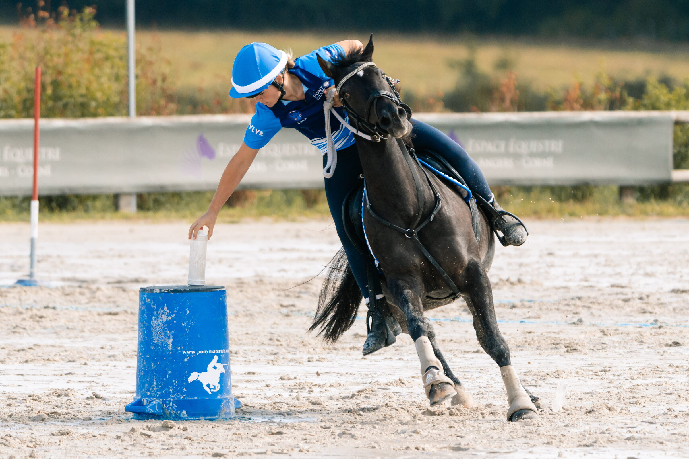
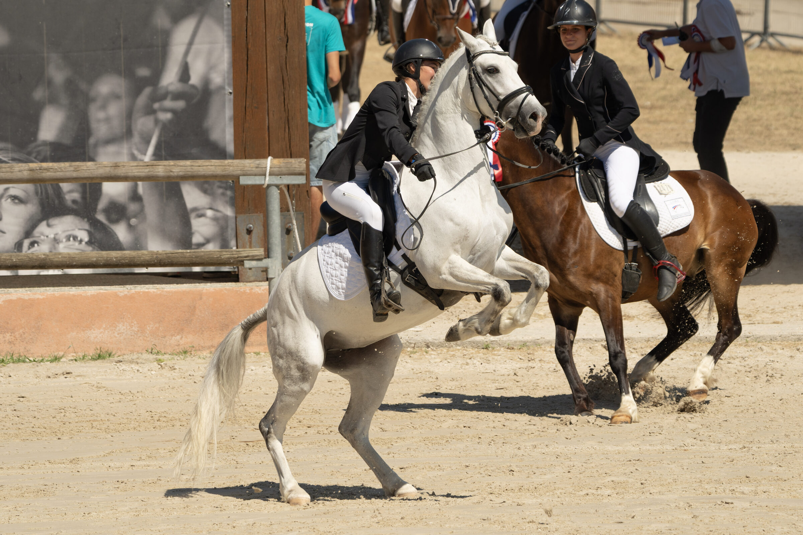
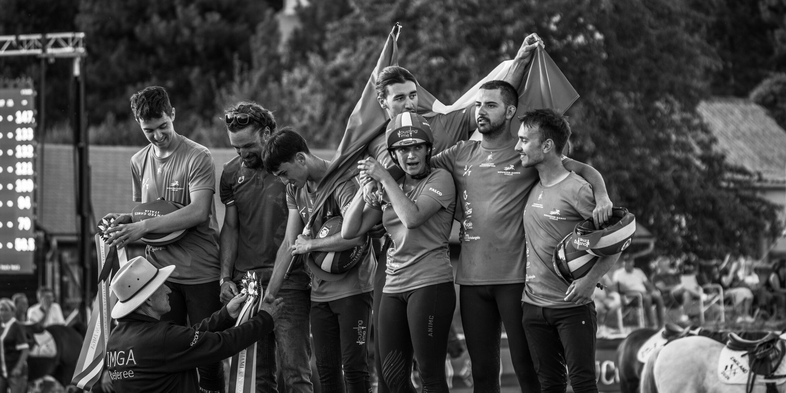
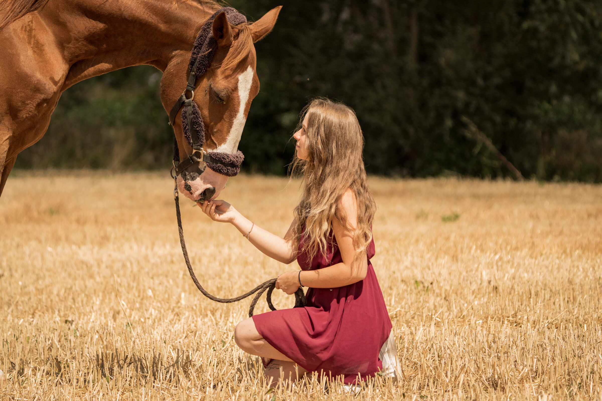
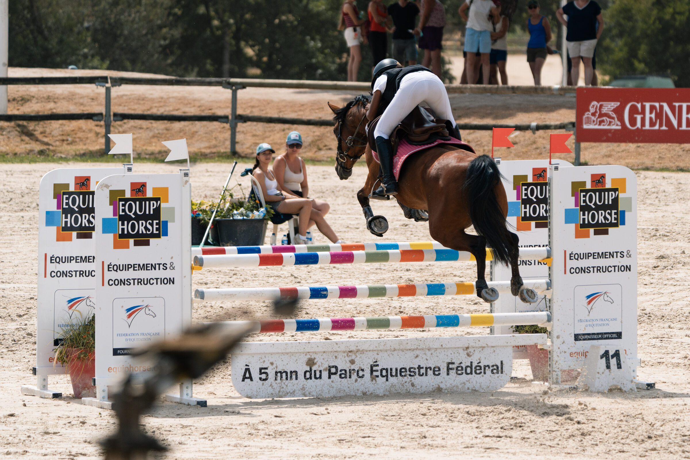
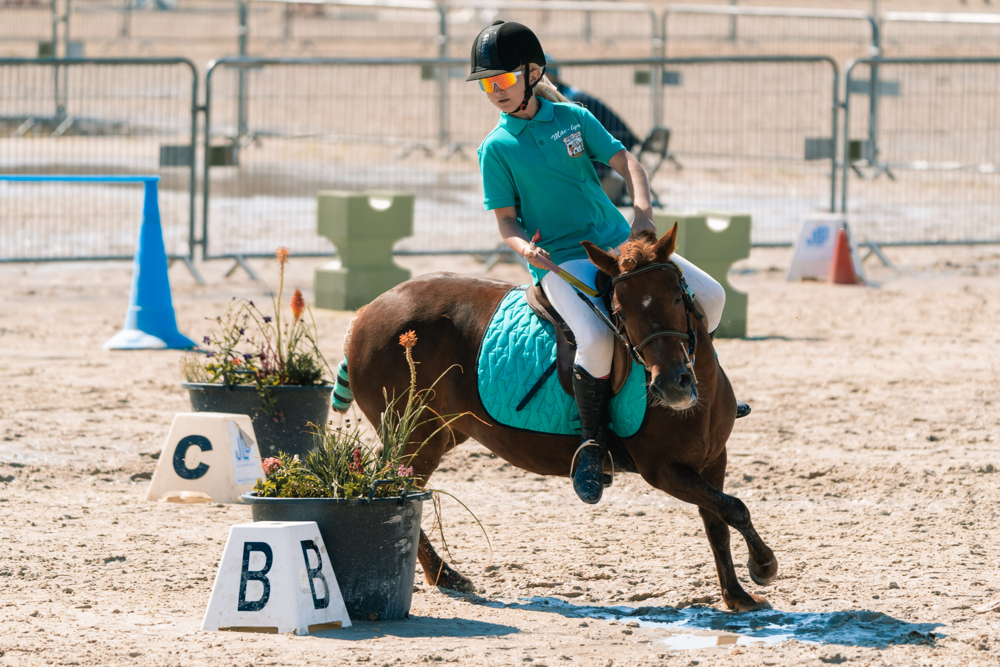
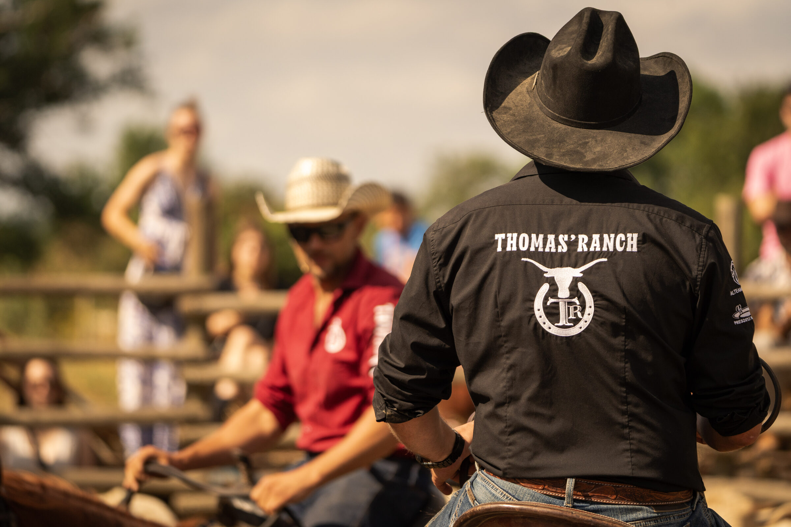

IMAGES · ÉMOTIONS · HISTOIRES
RACONTER
CE QUI SE
VIT VRAIMENT.
Photographe et cinéaste basé à Longny-les-Villages, je me déplace sur tout le territoire pour capturer des mariages et des instants équestres avec une approche sobre, sensible et cinématographique.

MON UNIVERS
UNE VISION.
DEUX PASSIONS.
Le mariage et le milieu équestre — deux univers différents, une même exigence : être présent au bon moment, sans jamais forcer l'instant, pour que les images restent vraies.

01
Mariages
Des émotions, des regards, des instants qui restent.
Découvrir →
02
Équestre
Sport, passion, élégance et puissance.
Découvrir →
03
Reportage
Le réel, sans artifice. Des histoires vraies.
Découvrir →
04
Films & réalisation
Des projets qui prennent vie.
Voir les films →« Le but n'est pas de fabriquer
le souvenir parfait.
C'est de vous permettre
de ressentir à nouveau le vrai. »
FILM À LA UNE
UNE HISTOIRE
EN MOUVEMENT.
Un film construit autour des regards, des gestes et de l'énergie d'un moment réel — pour retrouver les sensations, pas seulement les images.
Voir tous les films →SÉLECTION
DES MOMENTS
QUI RESTENT









DERRIÈRE L'IMAGE
UNE VISION,
DES HISTOIRES.
Je suis Jérémy Chouibkhi — JC PRODUCTION — photographe et cinéaste basé à Longny-les-Villages, spécialisé dans le mariage et l'univers équestre.
À travers mes images, je cherche à capturer bien plus que des scènes : je cherche à raconter ce que vous vivez vraiment, sans artifice.
En savoir plus →VOTRE HISTOIRE COMMENCE ICI
PARLONS DE VOTRE PROJET
Un mariage, un événement équestre, un reportage ou un film ? Échangeons autour de votre projet.
Me contacter →